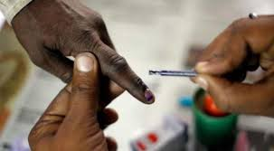
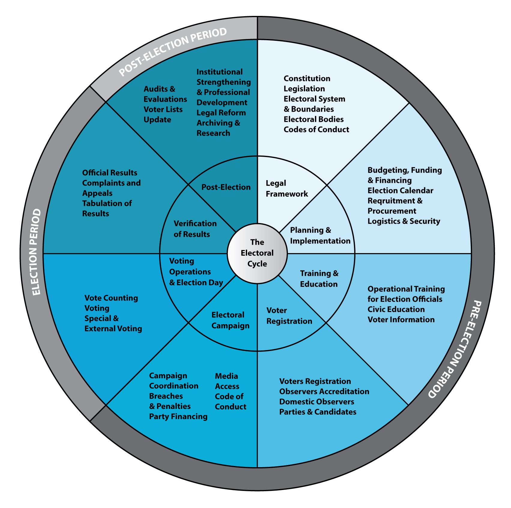
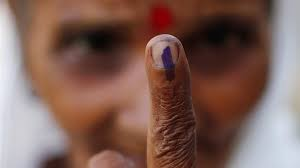

Election Commission of India's Model Code of Conduct is a set of guidelines issued by the Election Commission of India for conduct of political parties and candidates during elections mainly with respect to speeches, polling day, polling booths, portfolios, election manifestos, processions and general conduct. These set of norms has been evolved with the consensus of political parties who have consented to abide by the principles embodied in the said code in its letter and spirit. The Model Code of Conduct comes into force immediately on announcement of the election schedule by the commission for the need of ensuring free and fair elections.Its main purpose is to ensure that ruling parties, at the Centre and in the States, do not misuse their position of advantage to gain an unfair edge. It is designed to avert practices which are deemed corrupt under model code of conduct . For example, politicians should not make hate speeches, putting one community against another or make promises about new projects that may sway a voter. For the 2019 Indian general election the code came into force on 10 March 2019 when the Commission announced the dates and remains in force till the end of the electoral process.
The main points of the code of conduct are:
|  |  |  |
आचार संहिता क्या है?
आचार संहिता नियम और दिशानिर्देश का एक सेट है। इसके माध्यम से यह तय किया जाता है कि चुनाव की घोषणा के बाद राजनीतिक पार्टियों को किन गतिविधियों से परहेज करना चाहिए। इसमें भाषण देने से लेकर मतदान वाले दिन, मतदान केंद्र, पोर्टफोलियो, चुनाव घोषणा पत्र, जुलूस और रैली से संबंधित नियम होते हैं। इसका मकसद स्वच्छ और निष्पक्ष चुनाव आयोजित कराना होता है।
कब से लागू होती है आचार संहिता?
जिस दिन चुनाव के शेड्यूल की घोषणा होती है, उसी दिन से आचार संहिता लागू हो जाती है। जब तक चुनाव का रिजल्ट नहीं आ जाता, तब तक आचार संहिता लागू रहती है।
आचार संहिता का इतिहास
पहली बार इसका इस्तेमाल 1960 में केरल के विधानसभा चुनावों में किया गया। नियमों का एक छोटा सा सेट तैयार करके पार्टियों को निर्देश दिया गया था। उनको बताया गया था कि चुनाव की घोषणा होने के बाद क्या करें और क्या न करें। उसके बाद 1962 में लोकसभा और विधानसभा के चुनावों में भी इन नियमों को बांटा गया। राज्य सरकारों से आग्रह किया गया कि वे पार्टियों के बीच आचार संहिता को स्वीकार्य बनाए।
साल 1967 के लोकसभा और राज्य सभा चुनावों में भी आचार संहिता को लागू किया गया।
साल 1979 में राजनीतिक पार्टियों से परामर्श के बाद आचार संहिता में एक बदलाव किया गया। सत्ताधारी पार्टी अपनी सत्ता और ताकत का इस्तेमाल करके अनुचित लाभ न उठा ले, इसके लिए एक नया सेक्शन जोड़ा गया। इसके माध्यम से सत्ताधारी पार्टी के लिए कुछ सीमाएं तय की गईं।
1991 में आचार संहिता को मजबूत बनाने के कदम उठाए गए और इसे फिर से जारी किया गया। 1991 में जिस रूप में आचार संहिता को जारी किया गया, वही अब तक चला आ रहा है।
साल 2013 में सुप्रीम कोर्ट ने चुनाव आयोग को आदेश दिया कि चुनाव घोषणापत्र से संबंधित दिशानिर्देश भी इसमें शामिल किए जाएं। सुप्रीम कोर्ट के आदेश का पालन करते हुए आयोग ने 2014 के लोकसभा चुनावों में घोषणापत्र से संबंधित नियम को भी शामिल किया।
कब से लागू होती है आचार संहिता?
जिस दिन चुनाव के शेड्यूल की घोषणा होती है, उसी दिन से आचार संहिता लागू हो जाती है। जब तक चुनाव का रिजल्ट नहीं आ जाता, तब तक आचार संहिता लागू रहती है।
आचार संहिता के माध्यम से क्या रोक लगाई जाती है?
आचार संहिता में आठ प्रावधान किए गए हैं जो सामान्य व्यवहार, बैठकों, जुलूस, मतदान दिवस, मतदान केंद्रों, पर्यवेक्षकों, सत्ताधारी पार्टी और चुनाव घोषणापत्र से संबंधित है।
सामान्य व्यवहार
किसी भी राजनीतिक पार्टियों की आलोचना उसकी नीतियों और कार्यक्रमों, अतीत के रेकॉर्ड और काम तक सीमित होगी। किसी उम्मीदवार पर निजी हमले नहीं किए जा सकते हैं। गैर प्रमाणित रिपोर्ट्स के आधार पर किसी उम्मीदवार की आलोचना नहीं की जा सकती है। वोट पाने के लिए जातिगत और सांप्रदायिक उन्माद नहीं भड़का सकते हैं। मतदाताओं को न तो किसी तरह का मौद्रिक या चीज (शराब या कोई अन्य सामान) के रूप में लालच दिया जा सकता है और न डराया-धमकाया जा सकता है। किसी व्यक्ति के विचार के खिलाफ उसके घर के बाहर धरना-प्रदर्शन का आयोजन नहीं किया जा सकता है।
बैठक
किसी तरह की मीटिंग का आयोजन करना हो तो संबंधित पार्टी को स्थानीय पुलिस को सूचना देनी होगी। उनको मीटिंग के स्थान और समय के बारे में जानकारी देनी होगी ताकि पुलिस सुरक्षा का व्यापक बंदोबस्त कर सके।
जुलूस
एक ही मार्ग पर दो या उससे ज्यादा उम्मीदवार जुलूस की योजना बना रहे हैं तो आयोजकों को पहले सूचित करना होगा ताकि जुलूस के दौरान टकराव पैदा न हो। अन्य राजनीतिक पार्टियों के सदस्यों का पुतला ले जाने और जलाने की अनुमति नहीं दी जाएगी।
मतदान दिवस
हर पार्टी को अपना एजेंट नियुक्त करना होगा। उन एजेंट को पहचान का बैज देना होगा। बैज पर पार्टी का नाम, चुनाव चिह्न या उम्मीदवार का नाम नहीं होना चाहिए।
मतदान केंद्र
मतदान केंद्र में हर किसी को जाने की अनुमति नहीं होगी। सिर्फ मतदाता ही मतदान केंद्र पर जा सकेंगे। इसके अलावा वे लोग ही मतदान केंद्र पर जा सकेंगे जिनको चुनाव आयोग की ओर से एक वैध पास जारी किया गया होगा।
पर्यवेक्षक
चुनाव आयोग पर्यवेक्षकों को नियुक्त करेगा। चुनाव के दौरान किसी तरह की गड़बड़ी होने पर उम्मीदवार पर्यवेक्षक के पास अपनी शिकायत दर्ज करा सकेंगे।
सत्ताधारी पार्टी
1979 में सत्ताधारी पार्टी के लिए कुछ सीमाएं तय कर दी गई हैं। दरअसल इस बात की पूरी संभावना रहती है कि सत्ताधारी पार्टी सत्ता का दुरुपयोग कर सकती है। इसके मुताबिक, मंत्रियों को कोई भी ऐसा आधिकारिक दौरा करने की अनुमति नहीं होगी जिससे चुनाव प्रभावित हो। वे इसके लिए आधिकारिक मशीनरी का भी इस्तेमाल नहीं कर सकते हैं। सरकार ऐसे विज्ञापन नहीं दे सकती है जिसमें उसकी उपलब्धियों का बखान हो। इससे चुनाव में जीतने की संभावना प्रभावित होगी। मंत्री एवं अन्य अथॉरिटीज किसी तरह का वित्तीय अनुदान देने या सड़क, भवन निर्माण या पीने के पानी या कोई और काम का वाद नहीं कर सकते हैं। सार्वजनिक स्थानों और रेस्ट हाउसों के इस्तेमाल की अनुमित अन्य पार्टियों की भी मिलनी चाहिए। सिर्फ सत्ताधारी पार्टी ही उस पर अपना एकाधिकार न जमाए।
चुनाव घोषणापत्र
पार्टियों को ऐसा वादा नहीं करना चाहिए जिससे मतदाता प्रभावित हों। किसी तरह का वादा करने की स्थिति में पार्टियों को यह भी बताना होगा कि वह उसको कैसे हासिल करेगी।
सोशल मीडिया के लिए आचार संहिता
चुनाव आयोग के मुताबिक, सभी उम्मीदवारों को नामांकन दाखिल करते समय अपने सोशल मीडिया अकाउंट्स का विवरण देना होगा। सोशल मीडिया पर सभी तरह के राजनीतिक विज्ञापनों के लिए पहले से सर्टिफिकेट लेना होगा।
चुनाव आयोग ने गूगल, फेसबुक, ट्विटर, यूट्यूब, इंस्टाग्राम और वॉट्सऐप से सभी तरह के राजनीतिक विज्ञापनों का सत्यापन करने को कहा है।
विज्ञापन और उसकी सामग्री को लेकर शिकायत दर्ज करने के लिए गूगल, फेसबुक, ट्विटर, यूट्यूब, इंस्टाग्राम और वॉट्सऐप की ओर से एक ग्रीवांस ऑफिसर नियुक्त किया गया है।
किसी भी राजनीतिक पार्टी के पोस्टर और बैनर चुनाव आयोग की मंजूरी के बगैर गूगल, फेसबुक, ट्विटर, यूट्यूब, इंस्टाग्राम और वॉट्सऐप पर शेयर नहीं किए जा सकते हैं।
चुनाव आयोग की मंजूरी के बगैर गूगल, फेसबुक, ट्विटर, यूट्यूब, इंस्टाग्राम और वॉट्सऐप पर सरकारी योजनाओं के ऐसे पोस्टर और बैनरों को शेयर नहीं किया जा सकता है जिनमें पीएम, सीएम या किसी मंत्री का चित्र हो।
आचार संहिता के उल्लंघन पर क्या?
चुनाव आयोग यह सुनिश्चित करता है कि केंद्र और राज्य में सभी पार्टियां आचार संहिता का पालन करे। कई बार कोई पार्टी या उम्मीदवार इन नियमों का उल्लंघन करते हैं। वे चुनाव जीतने के लिए अपराध का सहारा लेते हैं या भ्रष्टाचार करते हैं। वे कई बार मतदाताओं को डराते-धमकाते हैं या फिर पैसा, दारू, कपड़ा और किसी अन्य चीज का लालच देते हैं। इस तरह के उल्लंघन की कोई भी व्यक्ति शिकायत कर सकता है। चुनाव आयोग उल्लंघन करने वालों के खिलाफ कार्रवाई करता है। उल्लंघन करने वालों को जेल तक की सजा हो सकती है।
चुनाव आयोग ने सिविजिल ऐप लॉन्च किया है। इसकी मदद से कोई भी व्यक्ति आचार संहिता के उल्लंघन को अपने मोबाइल में रिकॉर्ड कर सकता है और इसे आगे चुनाव अथॉरिटीज को उपयुक्त कार्रवाई के लिए भेज सकता है।
कानूनी तौर पर आचार संहिता का पालन अनिवार्य?
कानूनी तौर पर आचार संहिता का पालन करना अनिवार्य नहीं है। इसका कारण है कि आचार संहिता को लागू करने के लिए कोई उपयुक्त कानून नहीं है। वैसे इसके उल्लंघन की स्थिति में अन्य संबंधित कानूनों जैसे इंडियन पीनल कोड, 1860, कोड ऑफ क्रिमिनल प्रोसीजर, 1973 और रेप्रजेंटेशन ऑफ पीपुल ऐक्ट, 1951 के तहत कार्रवाई की जाती है। चुनाव आयोग इसे कानूनी रूप से अनिवार्य बनाने के पक्ष में नहीं है। आयोग का तर्क है कि चुनाव एक छोटी अवधि में समाप्त हो जाता है जबकि न्यायिक कार्यवाही में काफी लम्बा समय लगता है। ऐसे में कानून द्वारा इसे लागू करना संभव नहीं है। 2013 में एक कमिटी ने इसे कानूनी रूप से अनिवार्य बनाने का सुझाव दिया था। कमिटी ने अपनी रिपोर्ट में कहा था कि इसके ज्यादातर प्रबंध संबंधित कानूनों के माध्यम से लागू किए जाने योग्य हैं। कमिटी ने सुझाव दिया था कि आचार संहिता को रेप्रजेंटेशन ऑफ पीपुल ऐक्ट, 1951 का हिस्सा बनाया जाना चाहिए।